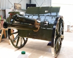
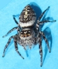
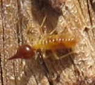
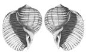
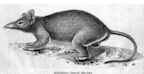
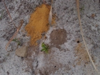

2015 Newsletters
If you would like to receive North Head Sanctuary Foundation newsletters via your email, just ask to be put on the mailing list by contacting:
northhead@fastmail.com.au

Bandicoot
January 2015
Native Plant Nursery; Education Room; Angophora hispida; Ocean Care Day; North Head Long Nosed Bandicoots; Third Cemetery - Vincent Heaton; Sandstone obelisks.

WW1 gun being restored
February/March 2015
Jim Frecklington talks about restoration of WW1 gun; Native Plant Nursery; Revegetation after fire; Third Cemetery - James Ernest Derrington; Xyris gracilis.

Jumping Spider
April 2015
Meeting May 20 - speaker David Jenkins, whale spotter; North Head plant labels; new plantings; congratulations to award recipients; Bandicoot update; Clean Up Australia; Spider webs; Pittosporum revolutum; Third Cemetery - James McNair, Alice and Adelaide Forshaw.

Termite (white ant)
May 2015
Whale Watching talk on May 20; The Usefulness of White Ants (termites); Aerial photographs - then and now; Gleichenia microphylla; Third Cemetery - “The Duchess of Argyle”.

Opening visitor centre
June 2015
Whale Watching presentation; Publication of Eastern Suburbs Banksia Scrub research papers; Opening of SHFT visitor centre at North Fort; Third Cemetery - Java Fever; When was the Obelisk built?; Hibbertia fasciculata; Forgotten engravings on North Head.

Snail shells
July 2015
Next Meeting July 29 Staff of Waste Water Treatment Plant will talk about odour; The "John Barry" and the mystery of when the Obelisk was built; Spirals in nature; Third Cemetery - measles from on board the "Energia".

Antechinus stuartii
August 2015
Spring Walks; The Missing Antechinus holotype; Reporting wildlife deaths; Spiral Shell project; Third Cemetery - 3 Cornelius children.

Costa Georgiadis visit
September 2015
AGM September 12 at 2pm; Spring Walks; Q Station Community Day; Nursery needs wire coat hangers; Gardening Australia's Costa Georgiadis visit - to be screened on Sept 19 on ABC at 6:30pm; Patersonia glabrata; Twining and twisting - flora and fauna; Third Cemetery - Ah Yet from the Chinese Liner, Taiyuan.

Dr Jennifer Anson
October 2015
Spring Wildflower walks; Planting on the oval to provide cover for bandicoots; Then and Now - planting in Feb 2013 compared with the same bank in September 2015; Round the Twist - part 4; Second phase of introductions of Native bushrats to North Head by Dr Jennifer Anson of The Australian Wildlife Conservancy; Caesia parviflora.

Surveying regeneration
November 2015
Invitation to tour Waste Management Plant on Nov 14; Ocean Care Day on Dec 6; North Head Sanctuary Foundation Nursery; Report on Spring Wildflower walks; Plover Chicks are thriving near Bella Vista Café; Cockroaches; Survey of after effects of measures taken to reduce impact of rabbits after fire in Eastern Suburbs Banksia Scrub areas.

Sand on North Head
December 2015
Ocean Care Day on Dec 6; Planting on the Oval; Cryptostylis subulata; Magpie death; Soil changes on North Head over time; 1899 bushfire on North Head; measles and scarlet fever at the Quarantine Station in 1913; Mystery photo from North Head.